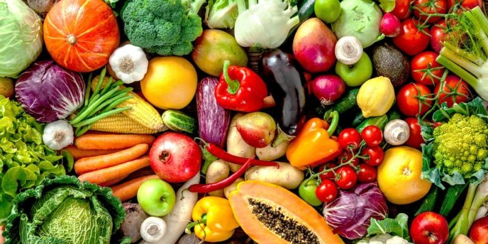

Hortalizas
Las hortalizas son ideales para huertos escolares por su ciclo de crecimiento relativamente corto.
- Tomates - Ricos en licopeno y vitamina C. Perfectos para enseñar sobre polinización y frutos.
- Lechugas - Crecimiento rápido (30-45 días). Ideales para observar ciclos completos en un semestre.
- Zanahorias - Enseñan sobre raíces comestibles. Ricas en vitamina A y divertidas de cosechar.
- Rábanos - Resultados muy rápidos (21-30 días). Excelentes para mantener la motivación de los estudiantes.
- Espinacas - Nutritivas y tolerantes al frío. Perfectas para enseñar sobre hojas comestibles.